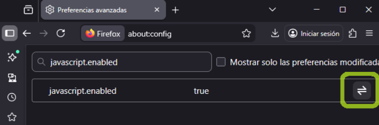
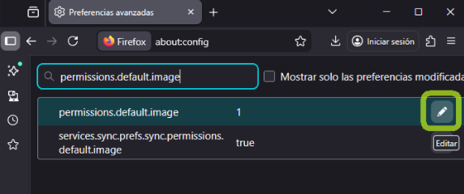
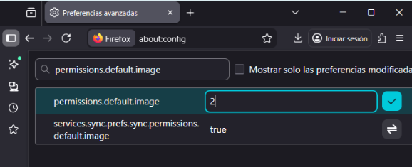

1. Combinación de colores
Tus compañeros de desarrollo web tienen dudas sobre cuál es la combinación de color más accesible entre las siguientes opciones:¿Cómo les ayudamos a seleccionar la mejor opción?
Lo primero sería entrar en https://webaim.org/resources/contrastchecker/ y ver si los colores escogidos son adecuados para ser accesibles a las personas con problemas visuales, la primera opción no sería accesible en textos de tamaño normal, mientras que la segunda opción sí que sería accesible en todas la formas de texto y objetos gráficos ya que existe mucho más contraste entre el texto y el fondo
2. Subtítulos en los vídeos
Los subtítulos ponen nuestro contenido a disposición de una audiencia mayor, en la que se incluyen personas con problemas auditivos, o bien personas que hablan un idioma distinto al del vídeo.. ¿Cómo incluirías subtítulos en un vídeo? ¿se puede hacer directamente desde YouTube?
Los subtítulos se pueden añadir fácilmente desde cualquier programa de edición de vídeo, aunque no es la opción más rápida. En Youtube se incluyen subtítulos automáticos en los vídeos, en inglés mayormente y con algunos errores dependiendo de la calidad del audio, pero también se pueden añadir manualmente
3. Deshabilitar imágenes y JavaScript
¿Cómo podrías ver una web como la vería una persona que tuviera las imágenes y el código JavaScript deshabilitado?
Cada navegador tiene su propio modo de quitar el JavaScript y las imágenes, en mi caso tengo instalado Firefox, y para quitar deshabilitar JavaScript e imágenes hay que poner en el buscador about:config:

A continuación hay que poner en la barra de búsqueda javascript.enabled y darle al icono para cambiar de TRUE a FALSE para desactivar el JavaScript.
Para desactivar las imágenes, escribe permissions.default.image en el buscador, haz click en el icono de editar y cambia el valor a 2 y guarda los cambios
 4. Idioma
¿Cómo indicarías el idioma de una web? ¿y el idioma de una palabra concreta, el de una etiqueta de cita o el de una etiqueta blockquote? ¿qué harías para indicar el idioma de un enlace?
Para cambiar el idioma de una web HTML, se usa lla etiqueta para declarar el idioma principal de esta manera:
<html lang="es" xml:lang="es">
5. Texto alternativo en las imágenes
¿Le pondrías un texto alternativo al logotipo de una empresa? ¿Qué texto alternativo? ¿y a una imagen decorativa?
El propósito principal del alt text es brindar información y ayudar a contextualizar el contenido a personas con discapacidad visual que utilizan lectores de pantalla. Todas las imágenes que tengan importancia en la web deben contener la etiqueta alt, encambio los logotipos y las imágenes decorativas no deberían tener un alt ya que no aportan información importante de la pagina.
<img src="imagen.jpg" alt="Descripción de la imagen">
<src="fondo.jpg" alt="">
6. Nivel de conformidad de los proyectos
Estos son los distintos niveles de conformidad sobre accesibilidad disponibles: ¿Qué nivel de conformidad exigirías para un sitio web muy complejo?
Con un nivel de conformidad AA es suficiente para que una web sea accesible por un gran número de personas, el nivel máximo (AAA) es difícil de alcanzar y algunos de estos criterios pueden ser difíciles de implementar y pueden afectar la presentación y el diseño del sitio.
7. Separación del estilo y la estructura
¿Por qué crees que es importante separar los estilos (CSS) de los contenidos y la estructura del documento (HTML)?
La separación de los estilos y el contenido HTML es importante principalmente por la accesibilidad y la eficiencia. Al no usar estilos en línea, se permite que usuarios con daltonismo o necesidades visuales puedan aplicar sus propias hojas de estilo o utilizar herramientas de accesibilidad (como Helperbird) para sobrescribir los colores y fuentes de la página y adaptarlos a sus necesidades
8. Anidamiento de los encabezados
Te han encargado que mejores la accesibilidad de un sitio web que tiene graves problemas de estructuración en su contenido. Esta web no utiliza elementos semánticos ni tiene los encabezados anidados de forma correcta: h1, h2, h3. En su lugar dispone de encabezados desestructurados: h1, h3, h5 e incluso encabezados creados con divs en lugar de usar el elemento semántico correspondiente. ¿Cómo podrías mejorar este diseño? ¿Qué herramienta utilizarías para comprobar el anidamiento de los encabezados?
Es necesario usar elementos semánticos para marcar la jerarquía de los títulos, qué es un párrafo, una cita, etc, en lugar de simular la estructura con elementos genéricos Para verificar que esta jerarquía de encabezados se ha implementado correctamente, la herramienta recomendada es una extensión de navegador como la Web Developer Toolbar, que permite visualizar el mapa estructural del documento.
9. Web maquetada mediante tablas
Te han encargado que mejores la accesibilidad de un sitio web que se encuentra maquetado mediante tablas. Su contenido se encuentra representado de la siguiente forma: ¿Qué mejoras realizarías?
Las tablas se pueden hacer accesibles con etiquetas semánticas como <caption>, <thead>, <tbody>, <th> para encabezados, y <td> para datos, pero en este caso el contenido de la tabla parece ser la estructura de una web con Cabecera, Menu, Contenido… seria mejor utilizar las etiquetas propias para esos campos como <header> <main> o <footer> y añadir etiquetas y descripciones, así facilitamos que los navegadores y los asistentes interpreten cada contenido
10. CAPTCHA
¿Qué alternativas hay al uso de un CAPTCHA? ¿Cómo es el nuevo reCAPTCHA v3 de Google y qué mejoras trae?
El problema principal de los CAPTCHA tradicionales es su falta de accesibilidad, afectando a usuarios con daltonismo o con problemas de visión, al basarse en pruebas visuales. Aunque existen alternativas interactivas como preguntas textuales o problemas matemáticos, estas aún plantean barreras. La solución propuesta es reCAPTCHA v3, que abandona las pruebas interactivas y opera de forma no intrusiva mediante un sistema de puntaje que evalúa el comportamiento del usuario, permitiendo a Google distinguir eficazmente entre un bot y un usuario
11. Atributo acceskey
¿Para qué usarías el atributo acceskey?
Es un atributo que asigna un atajo de teclado (una tecla o combinación de teclas) a un elemento HTML (como un enlace o botón), permitiendo a los usuarios activarlo o enfocarlo rápidamente, lo cual mejora la accesibilidad para quienes usan el teclado en lugar del ratón.
12. Atributo tabindex
¿Para qué usarías el atributo tabindex? ¿Qué valor puedes darle a tabindex para eliminar un elemento del orden de pestañas?
El atributo tabindex se utiliza para especificar en qué orden se enfocarán los elementos cuando el usuario navega por una página web utilizando la tecla Tab. Para eliminar un elemento del orden de pestañas podemos ponerle un orden negativo o muy alto para que el orden se salte ese campo en concreto
13. Controles del formulario
¿Cómo etiquetarías correctamente los controles del siguiente formulario?
<label>Nombre:</label>
<input type="text" name="textfield" />
¿Cómo haríamos accesibles los inputs que no tienen un label asociado?
<label for="nombre">Nombre:</label>
<input type="text" id=”nombre”/>
Se puede hacer con la etiqueta title y añadir una descripción de la información que debe
incluirse en el input.